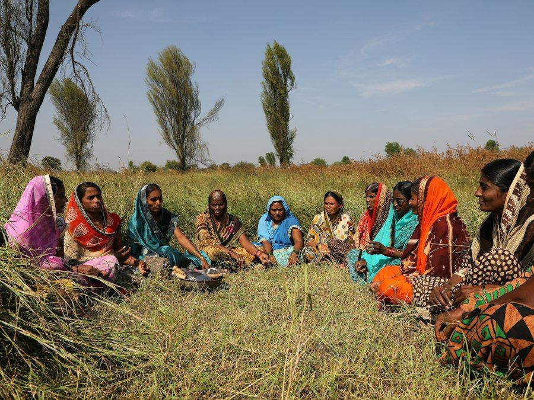
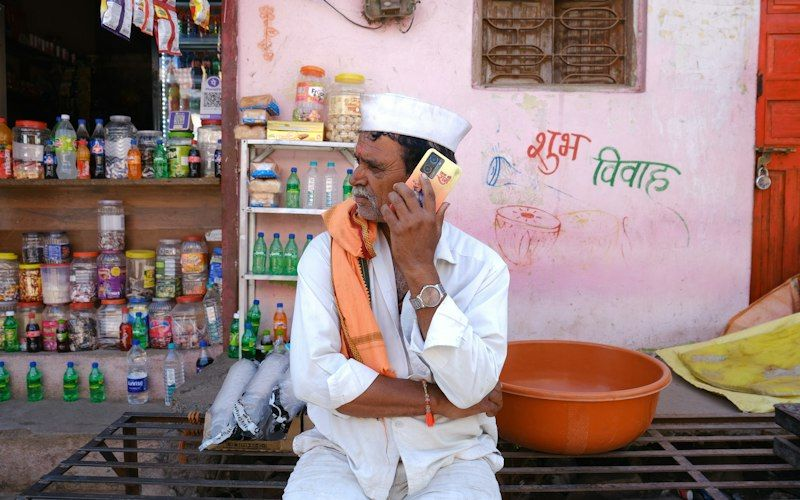

Compliance knowledge for everyone, not only professionals
Three practical learning tracks: everyday awareness for citizens and taxpayers, survival guides for micro and small businesses, and a structured study zone for students. Every resource is free and authored by Vipin.

Know your rights and duties as a taxpayer
Plain-language explainers, myths and facts, a statutory due-date calendar and a checklist to help you avoid penalties.
Jargon-free explainers
What is the AIS and why should I check it?
The Annual Information Statement on incometax.gov.in shows what the tax department already knows about you: salary, interest, dividends, share and mutual fund sales, property purchases, high-value spending and TDS. Before filing your return, open it and make sure every item is either included in your return or, if wrong, flagged through the feedback option. Most notices today begin with a mismatch between the AIS and the return.
Do I need to file a return if my tax is nil?
Often yes. Filing is required when your gross income before deductions exceeds the basic exemption limit of your regime (Rs. 4 lakh under the new regime), even if the Rs. 60,000 rebate brings tax to nil. Filing is also compulsory in specified cases, such as depositing more than Rs. 1 crore in current accounts, spending more than Rs. 2 lakh on foreign travel or more than Rs. 1 lakh on electricity in a year, regardless of income.
Is that GST bill genuine?
Every registered supplier must print a 15-character GSTIN on the invoice. Open gst.gov.in, choose Search Taxpayer, and enter the GSTIN. If the business is not found, is cancelled, or the name differs, ask for clarification. An unregistered person cannot collect GST from you. For restaurants and shops, the rate charged should match the current notified rate for that item.
Cash rules that surprise people
No one may receive Rs. 2 lakh or more in cash from a person in a day, for a single transaction or for one event (Section 269ST); the penalty equals the amount received. Loans and deposits of Rs. 20,000 or more must not be taken or repaid in cash (Sections 269SS and 269T). Businesses lose the deduction for cash expenses above Rs. 10,000 to a person in a day (Section 40A(3)).
Gifts and taxes
Gifts from specified relatives (spouse, siblings, parents, children and their spouses, and others defined in law) and gifts on marriage or by inheritance are not taxed. Gifts from others are taxable in the receiver's hands if the total exceeds Rs. 50,000 in a year (Section 56(2)(x)), and then the entire amount is taxable, not just the excess.
Your salary slip and the new labour law
Under the Labour Codes in force from 21 November 2025, every employee must get an appointment letter, monthly wages must be paid by the 7th of the next month, and full and final settlement must be completed within two working days of leaving. If allowances make up more than half your pay, part of them counts as wages for PF and gratuity.
Myth vs fact
Tap a card to reveal the fact.
Statutory due-date calendar
Dates shown are statutory due dates. When a due date falls on a holiday or the Government extends it, the notified date applies. Always confirm on the official portal.
Penalty-avoidance checklist for individual taxpayers
Tick items as you complete them. Your progress is saved in this browser only.
Frequently asked questions
I received an income tax notice by email. Is it genuine?
What happens if my PAN is not linked to Aadhaar?
I missed the return due date. What can I do?
Do I have to report foreign assets?

A survival guide for micro-businesses
How Udyam registration helps, how to recover delayed payments through MSME Samadhaan, and a low-cost compliance roadmap.
Udyam Registration: what it is and why it pays
The basics
Udyam Registration is a free, online, paperless registration for micro, small and medium enterprises on udyamregistration.gov.in. It needs only Aadhaar of the proprietor, partner or authorised signatory, and PAN (and GSTIN where applicable). Investment and turnover are picked up from income tax and GST data. There is no renewal and no fee; beware of websites that charge for it.
| Class (from 1 April 2025) | Investment in plant, machinery or equipment | Turnover |
|---|---|---|
| Micro | Up to Rs. 2.5 crore | Up to Rs. 10 crore |
| Small | Up to Rs. 25 crore | Up to Rs. 100 crore |
| Medium | Up to Rs. 125 crore | Up to Rs. 500 crore |
Both limits must be met. Exports are excluded from turnover for classification. Informal micro enterprises without GST or PAN can register on the Udyam Assist Platform for priority sector lending benefits.
Benefits you can actually use
- Delayed payment protection: buyers must pay micro and small suppliers within the agreed period, which cannot exceed 45 days, or within 15 days where there is no agreement (MSMED Act, Section 15).
- Compound interest on delays at three times the bank rate notified by the RBI, with monthly rests (Section 16).
- Tax pressure on buyers: buyers lose their income tax deduction for MSE dues paid late (Income-tax Act, Section 43B(h) reference), so they prioritise registered suppliers.
- Collateral-free credit through the Credit Guarantee Fund Trust for Micro and Small Enterprises (CGTMSE), with guarantee limits revised upwards in 2025.
- Government procurement: central ministries and CPSEs must procure at least 25% of their annual purchases from micro and small enterprises, including 3% from women-owned and 4% from SC/ST-owned enterprises, with tender fee and EMD exemptions.
- Priority sector lending and access to schemes of the Ministry of MSME and the States.
- TReDS: sell invoices from large buyers on the Trade Receivables Discounting System to get paid quickly without recourse.
MSME Samadhaan: recovering delayed payments
- Check eligibility: you must be a micro or small enterprise registered on Udyam as a manufacturer or service provider at the time of supply. Medium enterprises and traders cannot use this route.
- Send a written demand to the buyer citing invoices, acceptance dates, the 15 or 45 day limit and interest under Section 16.
- File online on samadhaan.msme.gov.in with Udyam number, buyer details, invoices, proof of delivery and acceptance, and correspondence.
- Micro and Small Enterprise Facilitation Council (MSEFC) of the State takes up the reference under Section 18. It first attempts conciliation; if that fails, it arbitrates or refers the matter to an arbitration institution. The award should ordinarily be made within 90 days of the reference.
- Appeal protection: a buyer who wants to challenge the award in court must first deposit 75% of the awarded amount (Section 19).
Bookkeeping best practices for a one-person business
Separate the money
Open a current account only for the business. Route every sale and every business expense through it. Mixing personal and business money is the most common reason small businesses cannot explain their numbers.
Prefer digital receipts
Under the presumptive scheme, digital receipts are taxed at 6% instead of 8%, and keeping cash below 5% of turnover raises the presumptive limit to Rs. 3 crore. Use UPI, cards and bank transfers.
Weekly 30-minute routine
File every bill in a dated folder (or a phone app), update a simple sales and expense sheet, and reconcile with the bank statement. Monthly, match sales with GST returns.
Number your invoices
GST requires consecutive serial numbers for each financial year. Never reuse or skip numbers; cancelled invoices should be retained and marked cancelled.
Keep records long enough
Keep GST records for 72 months from the due date of the annual return, and income tax records for at least six years. Store scanned copies in two places.
Know your thresholds
Track turnover monthly against GST registration (Rs. 20 or 40 lakh), presumptive and audit limits (Rs. 1 crore, Rs. 2 or 3 crore), and TDS obligations, so you act before crossing them.
Low-cost statutory compliance roadmap
| When | What to do | Typical cost |
|---|---|---|
| Month 0 (start) | PAN for the entity (if not a proprietorship), current account, Udyam registration, Shops and Establishments registration or intimation under State law, GST registration if threshold crossed or compulsory, Professional Tax enrolment where applicable | Udyam and GST are free on the official portals; State fees for shops registration are nominal |
| Every month | Issue GST invoices, file GSTR-1 and GSTR-3B (or use QRMP to file quarterly and pay monthly), deposit TDS if deducted, pay PF and ESIC if covered | Free portals; accounting software or a part-time accountant |
| Every quarter | TDS statements if applicable; QRMP returns; CMP-08 if under composition | As above |
| Every year | Income tax return (presumptive scheme if eligible), advance tax by 15 March for presumptive taxpayers, GSTR-9 if turnover exceeds Rs. 2 crore, renewal of trade licences | Professional fee for return filing if needed |
| On growth | Move to a partnership, LLP or private company when liability protection, fund raising or contracts require it; re-check e-invoicing (Rs. 5 crore) and tax audit limits | Incorporation fees and annual ROC filings |
Frequently asked questions
Is Udyam registration mandatory?
Can a trader get Udyam registration?
I sell only on an e-commerce marketplace. Do I need GST?
My buyer says it will pay in 90 days. Is that allowed?
Structured revision for commerce, law and management students
Section-wise memory tables, landmark case summaries, comparative charts and step-by-step filing walkthroughs.
Built for B.Com, M.Com, BBA, MBA, LL.B, CA, CS and CMA students. Use the memory tables for revision, the case summaries for answers that need authority, and the walkthroughs to connect theory with practice.
Module 1: Section-wise memory tables
Companies Act, 2013
| Section | Remember it as |
|---|---|
| 2(85) | Small company definition |
| 7 | Incorporation |
| 10A | Commencement of business (INC-20A, 180 days) |
| 92 | Annual return (MGT-7, MGT-7A) |
| 96 | AGM within 6 months of year end |
| 134 | Board's report and approval of accounts |
| 135 | CSR (2% of average net profit) |
| 137 | Filing financial statements (AOC-4) |
| 139 | Appointment of auditor |
| 164 | Disqualification of directors |
| 173 | Board meetings |
| 185 and 186 | Loans to directors; loans and investments by company |
| 188 | Related party transactions |
| 248 | Strike-off |
CGST Act, 2017
| Section | Remember it as |
|---|---|
| 2(6) | Aggregate turnover |
| 7 | Scope of supply |
| 9 | Levy, including reverse charge in 9(3) and 9(4) |
| 10 | Composition levy |
| 16 | Eligibility and conditions for ITC |
| 17(5) | Blocked credits |
| 22 and 24 | Registration: threshold and compulsory |
| 31 | Tax invoice |
| 37, 39, 44 | GSTR-1, GSTR-3B, GSTR-9 |
| 50 | Interest |
| 73, 74, 74A | Demand and recovery |
| 107 and 112 | Appeals to Appellate Authority and Tribunal |
| 122 | Penalties |
| 129 | Detention of goods in transit |
Income-tax Act, 1961 (familiar labels)
| Section | Remember it as |
|---|---|
| 2(24) | Income (inclusive definition) |
| 10 | Exempt incomes |
| 14 | Five heads of income |
| 44AB | Tax audit |
| 44AD, 44ADA, 44AE | Presumptive taxation |
| 80C to 80U | Chapter VI-A deductions |
| 115BAC | New (default) regime |
| 139 | Return of income, including 139(8A) updated return |
| 143 and 144B | Assessment and faceless assessment |
| 148 and 148A | Reassessment |
| 192 to 196D | TDS |
| 206C | TCS |
| 234A, B, C | Interest for late filing and advance tax defaults |
From 1 April 2026 the Income-tax Act, 2025 applies with new numbering. Learn both, using the official mapping on incometax.gov.in.
Labour law quick numbers
| Item | Number to remember |
|---|---|
| EPF coverage | 20 or more employees; Rs. 15,000 wage ceiling |
| EPF rates | 12% + 12% (8.33% EPS on up to Rs. 15,000) |
| ESIC coverage | 10 or more employees; Rs. 21,000 wage ceiling |
| ESIC rates | 0.75% employee, 3.25% employer |
| Gratuity | 5 years (1 year for fixed-term under the Code); 15/26 formula; Rs. 20 lakh ceiling |
| Maternity leave | 26 weeks for first two children |
| POSH committee | 10 or more employees; inquiry in 90 days |
| Codes in force | 21 November 2025 |
Module 2: Landmark case summaries
Salomon v. A. Salomon and Co. Ltd. [1897] AC 22 (House of Lords)
Principle: a company is a separate legal person distinct from its members, even where one person holds almost all the shares. Creditors of the company cannot reach the shareholder's personal assets merely because he controls the company. This is the foundation of limited liability and the reason courts "lift the veil" only in exceptional cases such as fraud.
McDowell and Co. Ltd. v. Commercial Tax Officer (1985) 3 SCC 230
Principle: tax planning within the law is legitimate, but colourable devices and dubious methods to avoid tax are not. The case is cited whenever arrangements lack commercial substance and exist only to defeat tax.
Union of India v. Azadi Bachao Andolan (2003) 263 ITR 706 (SC)
Principle: a Tax Residency Certificate issued by a treaty partner is sufficient evidence of residence, and treaty shopping is not illegal in the absence of a limitation of benefits clause. Later law (GAAR, the Multilateral Instrument's principal purpose test) narrowed this position.
Vodafone International Holdings B.V. v. Union of India (2012) 6 SCC 613
Principle: an offshore transfer of shares of a foreign holding company was not taxable in India under the law as it then stood. Parliament responded with a retrospective amendment in 2012 taxing indirect transfers, which was largely withdrawn for past transactions by the Taxation Laws (Amendment) Act, 2021.
Union of India v. Mohit Minerals Pvt. Ltd. (Supreme Court, 19 May 2022)
Principle: GST Council recommendations have persuasive, not binding, value for Parliament and State legislatures, reflecting cooperative federalism. The Court also struck down IGST on ocean freight on imports under CIF contracts as a levy on a composite supply already taxed.
Chief Commissioner of CGST v. Safari Retreats Pvt. Ltd. (Supreme Court, 3 October 2024)
Principle: "plant or machinery" in Section 17(5)(d) was read differently from "plant and machinery", and a building could qualify as a plant on a functionality test. The Finance Act, 2025 retrospectively amended the clause to "plant and machinery", limiting the effect of the judgment.
Vishaka v. State of Rajasthan (1997) 6 SCC 241
Principle: sexual harassment at the workplace violates fundamental rights under Articles 14, 15, 19(1)(g) and 21. The Court laid down guidelines that bound employers until the POSH Act, 2013 gave them statutory force.
Bangalore Water Supply and Sewerage Board v. A. Rajappa (1978) 2 SCC 213
Principle: the "triple test" for an industry: systematic activity, organised by cooperation between employer and employees, for the production or distribution of goods and services to satisfy human wants. It widened the reach of the Industrial Disputes Act.
Checkmate Services Pvt. Ltd. v. CIT (Supreme Court, 12 October 2022)
Principle: employees' PF and ESI contributions deducted by the employer are held in trust; if deposited after the due date under those laws, the employer permanently loses the income tax deduction. Employer contributions are treated differently.
Tata Consultancy Services v. State of Andhra Pradesh (2005) 1 SCC 308
Principle: canned software recorded on a medium is "goods" for sales tax purposes. The reasoning on intangibles as goods remains a useful foundation for understanding the classification of digital products.
Module 3: Comparative statutory charts
Choosing a business form
| Feature | Proprietorship | Partnership firm | LLP | Private company |
|---|---|---|---|---|
| Governing law | No specific law | Indian Partnership Act, 1932 | LLP Act, 2008 | Companies Act, 2013 |
| Separate legal entity | No | No | Yes | Yes |
| Liability | Unlimited | Unlimited, joint and several | Limited to agreed contribution | Limited to unpaid share capital |
| Minimum members | 1 | 2 | 2 partners (2 designated partners) | 2 members, 2 directors (OPC: 1) |
| Annual ROC filings | None | None (registration with State Registrar of Firms is optional but advisable) | Form 8 and Form 11 | AOC-4 and MGT-7 or MGT-7A, plus event filings |
| Audit | Only tax audit if limits crossed | Only tax audit if limits crossed | If turnover above Rs. 40 lakh or contribution above Rs. 25 lakh | Always (statutory audit) |
| Income tax rate | Slab rates of the owner | 30% plus surcharge and cess | 30% plus surcharge and cess | 25% or 30%, or 22% under Section 115BAA |
| Raising equity | Not possible | Admission of partners | Admission of partners; FDI under automatic route in eligible sectors | Easiest: shares, ESOPs, venture funding |
GST demand provisions compared
| Feature | Section 73 | Section 74 | Section 74A |
|---|---|---|---|
| Periods covered | Up to FY 2023-24 | Up to FY 2023-24 | FY 2024-25 onwards |
| Nature | No fraud or suppression | Fraud, wilful misstatement or suppression | Both, with different penalties |
| Time limit for order | 3 years from due date of annual return | 5 years from due date of annual return | SCN within 42 months; order within 12 months of SCN (extendable by 6 months) |
| Penalty if paid early | Nil if paid before or within 30 days of SCN | 15% before SCN, 25% within 30 days of SCN | Non-fraud: nil within 60 days of SCN. Fraud: 15% before SCN, 25% within 60 days of SCN, 50% within 60 days of order |
Module 4: Practical filing walkthroughs
Filing ITR-1 (Sahaj)
- Log in to incometax.gov.in with PAN and password.
- Download and review AIS and Form 26AS.
- Go to e-File, Income Tax Returns, File Income Tax Return; select the year and online mode.
- Choose ITR-1 if eligible (resident, income up to Rs. 50 lakh from salary, one house property, other sources and limited LTCG under Section 112A).
- Verify pre-filled salary, interest and TDS; choose the regime; add deductions if under the old regime.
- Pay any balance tax through e-Pay Tax and add the challan.
- Submit and e-verify within 30 days using Aadhaar OTP or net banking.
Filing GSTR-3B
- File GSTR-1 first and act on invoices in IMS.
- Open Returns Dashboard, choose the period, and open GSTR-3B.
- Check the auto-populated liability (Table 3.1) and ITC (Table 4) against your books.
- Enter reversals and ineligible ITC.
- Save, then Proceed to Payment; offset liability using credit in the legal order and pay cash balance.
- File with DSC or EVC and download the filed return.
Udyam registration
- Open udyamregistration.gov.in and choose the option for new entrepreneurs.
- Enter Aadhaar number and name; validate with OTP.
- Enter PAN and organisation type; the system fetches PAN data.
- Fill in business address, bank details, NIC code of activity, and employment.
- Submit with final OTP; download the Udyam certificate with the permanent registration number.